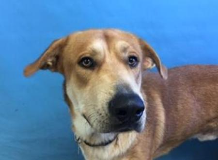

Food Depot
Alaskan/Husky Mix
Male
2 Years Old
70 Pounds
Woodbury
Another shelter was caring for me before I came to Animal Humane Society to find a home.
Affectionate dogs like me are cuddly and love snuggling and giving kisses. I might be a little shy or bashful as I adapt to a new environment, but that should be easy in a home with moderate activity.
I love to be busy, both physically and mentally. I'll enjoy seeing and doing things with my new family, and prefer an active household. Energetic dogs like me need a companion who can provide adequate mental stimulation and exercise, such as running, hiking, or playing Frisbee.